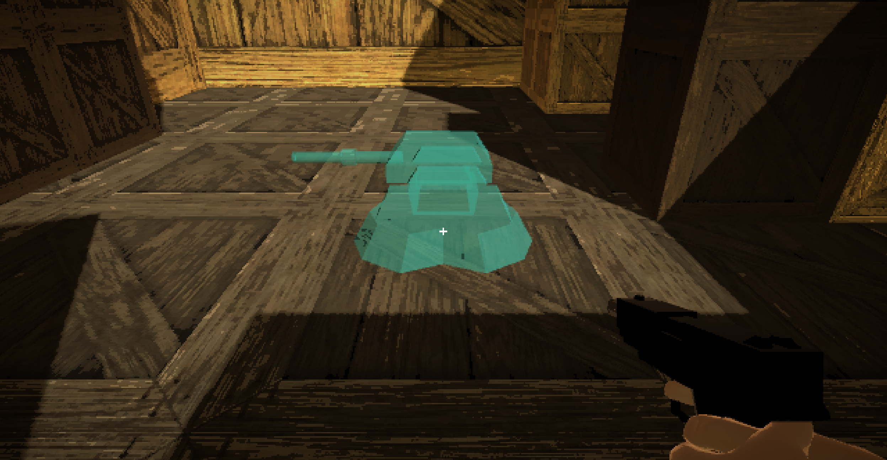

PORTFOLIO
Just Survive! is a first-person PVE game where you try to survive as long as possible in a zombie apocalypse.
The game is currently in early development and the main gameplay loop is not finalized.
The main premise and story of Just Survive is very subject to change.
Me and my friend, Zachary Sousa are currently developing the game together.
The game is being programmed in Unity, and my focus has been on the enemy AI and pathfinding.

Roads of Rage is a 2D top-down action game that was developed in Greenfoot using Java by me and Zachary Sousa.
The game is unfinished and has been mostly abandoned, but there are some interesting ideas that were enjoyable to work on.
Roads of Rage was mostly a learning experience for us, but I plan on using the skills I learned from the game in future projects.
Infra-Sight is a node.js project made in tandem with Zachary Sousa to track overwatch stats.
The goal of this project was to track people's stats in overwatch and create a weighted score to compare skill.
The reason this was made was partially for our high school e-sports team, but more importantly as a learning experience.
This project taught me valuable skill in node and general web development.
Our robots in the First Robotics Competition required a lot of code in Java to function properly.
The code for our 2022 and 2023 were primarily written by me, with some help from our robotics mentor.
This was a very useful experience and helped me understand how to apply code to the real world.
I plan on working on the 2024 robot's code, but at the time of writing the chassis is still being built.
I have worked on more that just the code, specifically designing and building as well. I have been working on designing and assembling the 2024 robot, and I designed a decent portion of the 2023 robot. The build season is a very tight time schedule, but I enjoy working on it.
I have worked on more that just the code, specifically designing and building as well. I have been working on designing and assembling the 2024 robot, and I designed a decent portion of the 2023 robot. The build season is a very tight time schedule, but I enjoy working on it.